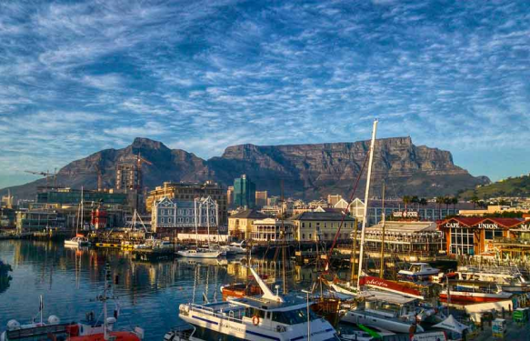
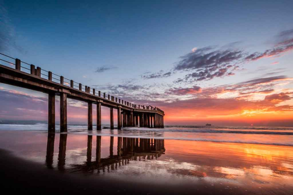
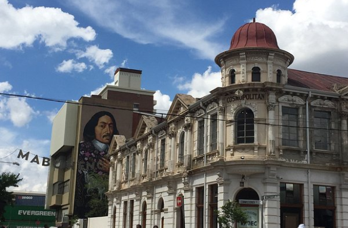
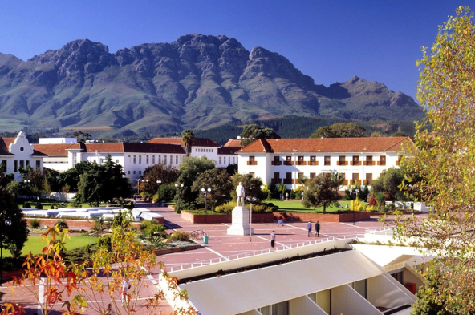
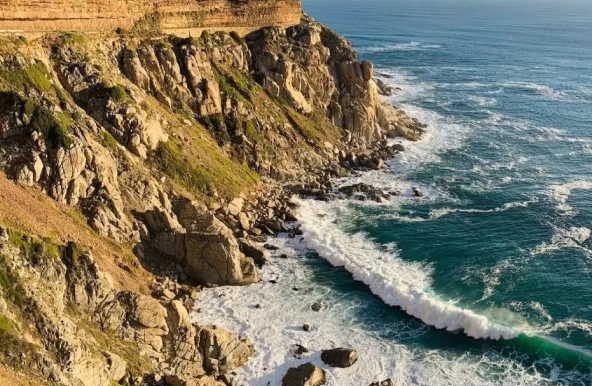

A África é agraciada com muitas paisagens incríveis e uma fauna inigualável, e isso não é surpresa para ninguém. Mas muita gente ainda não cogita o país como um destino de viagem por pensar que todos os lugares por lá são feios e pobres – o que é um erro enorme! Apesar das questões sociais do continente africano, existem muitos países por lá que abrigam pontos turísticos deslumbrantes, além de atrações para públicos variados. Vem ver os melhores destinos para conhecer na África do Sul e monte seu roteiro com a gente!
Pontos Turísticos
Cidade do Cabo
A Cidade do Cabo é um dos destinos que não pode faltar em seu roteiro. Além de ser uma das cidades mais lindas do mundo, é uma das grande atrações do país – perdendo apenas para os safáris. Não dá para negar que Cabo é uma região privilegiada e você vai encontrar muita coisa boa e bonita por lá: tem montanhas, muito verde, um mar estonteante (pena que sempre muito frio!), vinícolas e uma vida noturna bem agitada – e tudo isso com preços acessíveis!
Durban
Durban é uma cidade que fica um pouco de fora da rota de principais destinos turísticos para conhecer na África do Sul, mas se você estiver com tempo sobrando e quiser se encantar com as paisagens da “Austrália africana”. A cidade vibra juventude com muitos points modernos. É na orla que se encontra a galera mais interessada em esportes radicais ou quem só quer curtir o sol. Dá para pular de bungee jump e até fazer mergulho com tubarão branco, mas o sucesso mesmo fica por conta das ondas perfeitas para a galera que curte praticar surf.
Joanesburgo
Muita gente acaba caindo em Joanesburgo de paraquedas, por ter que passar pela cidade para ir até outros destinos. Se você for fazer uma escala por lá, vale reservar alguns dias para turistar – assim dá para conhecer um pouco mais da história do país antes de explorar outros destinos. Com um estilo mais cosmopolita, a cidade é o polo econômico sul-africano e reflete modernidade e uma rica mistura de culturas.
Stellenbosch
Para os apreciadores de vinho, Stellenbosch, a segunda maior região vinícola do país, é uma parada obrigatória na viagem para a África do Sul! Afinal, ir ao continente e não provar o vinho africano não tem graça, né? A apenas 50 km da Cidade do Cabo, dá para ir até a cidade em um passeio de um dia ou ficar mais tempo, se sua intenção for degustar muitos vinhos. Além da bebida, Stellenbosch é uma cidade universitária, com muita galera jovem e um centro agitado com muitos cafés, bares e restaurantes.
Península do Cabo e Parque Nacional de Cape Point
Em primeiro lugar da nossa lista de pontos turísticos da África do Sul, está a Península do Cabo, que faz parte da Região Floral do Cabo – tão famosa por sua biodiversidade . A viagem ao redor de sua Costa, que liga Camps Bay a Hout Bay, está entre as mais belas que já fizemos no mundo! Em Hout Bay, por exemplo, é possível curtir uma bela praia ou fazer um passeio de barco até a Ilha Duiker para admirar a vida marinha (principalmente focas).